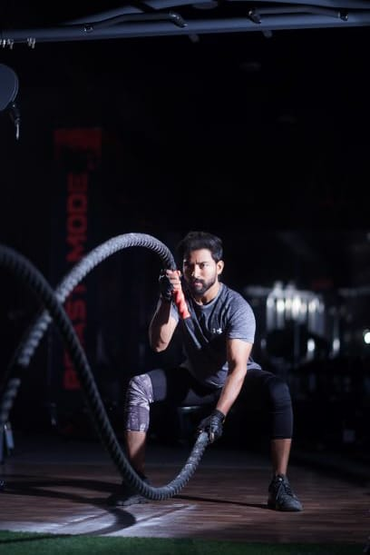

Its important to get all four types of exercise: endurance, strength, balance, and flexibility. Each one has different benefits. Doing one kind also can improve your ability to do the others.
Endurance
Endurance activities, often referred to as aerobic, increase your breathing and heart rates. These activities help keep you healthy, improve your fitness, and help you perform the tasks you need to do every day. Endurance exercises improve the health of your heart, lungs, and circulatory system. They also can delay or prevent many diseases that are common in older adults such as diabetes, colon and breast cancers, heart disease, and others. Physical activities that build endurance include:
Brisk walking or jogging
Yard work (mowing, raking)
Dancing
Swimming
Biking
Climbing stairs or hills
Playing tennis or basketball
Increase your endurance or “staying power” to help keep up with your grandchildren during a trip to the park, dance to your favorite songs at a family wedding, and rake the yard and bag up leaves. Build up to at least 150 minutes of activity a week that makes you breathe hard. Try to be active throughout your day to reach this goal and avoid sitting for long periods of time.
Safety tips
Do a little light activity, such as easy walking, before and after your endurance activities to warm up and cool down.
Listen to your body: endurance activities should not cause dizziness, chest pain or pressure, or a feeling like heartburn.
Be sure to drink liquids when doing any activity that makes you sweat. If your doctor has told you to limit your fluids, be sure to check before increasing the amount of fluid you drink while exercising.
If you are going to be outdoors, be aware of your surroundings.
Dress in layers so you can add or remove clothes as needed for hot and cold weather.
To prevent injuries, use safety equipment, such as a helmet when bicycling.
Strength
Your muscular strength can make a big difference. Strong muscles help you stay independent and make everyday activities feel easier, like getting up from a chair, climbing stairs, and carrying groceries. Keeping your muscles strong can help with your balance and prevent falls and fall-related injuries. You are less likely to fall when your leg and hip muscles are strong. Some people call using weight to improve your muscle strength “strength training” or “resistance training.”
Strength exercises include lifting weights, even your own body weight, and using a resistance band.
Lifting weights
Try to do strength exercises for all of your major muscle groups at least 2 days per week, but don’t exercise the same muscle group on any 2 days in a row. If you’re just starting, you might need to use 1- or 2-pound weights, or no weight at all. Your body needs to get used to strength exercises. You can use common objects from your home, such as bottled water or soup cans. Or, you can use the strength-training equipment at a fitness center or gym. Use light weights the first week, then gradually add more. Starting out with weights that are too heavy can cause injuries. Use proper form for safety. To prevent injury, don’t jerk or thrust weights into position. Use smooth, steady movements. Avoid “locking” your arm and leg joints in a tightly straightened position.
Using a resistance band
Resistance bands are stretchy elastic bands that come in several strengths, from light to heavy. You can use them in some strength exercises instead of weights. If you are a beginner, try exercising without the band or use a light band until you are comfortable. Add a band or move on to a stronger band when you can do two sets of 10 to 15 repetitions easily. Hold on to the band tightly (some bands have handles) or wrap it around your hand or foot to keep it from slipping and causing possible injury. Do the exercises in a slow, controlled manner, and don’t let the band snap back.Safety tips
Don’t hold your breath during strength exercises and breathe regularly.
Breathe out as you lift or push, and bre
Breathe out as you lift or push, and breathe in as you relax.
Talk with your doctor if you are unsure about doing a particular exercise.

Balance
Balance exercises help prevent falls, a common problem in older adults that can have serious consequences. Many lower-body strength exercises also will improve your balance. Exercises to improve your balance include Tai Chi, a “moving meditation” that involves shifting the body slowly, gently, and precisely, while breathing deeply.
Examples of balance exercises
Try standing on one foot, then the other. If at first you need support, hold on to something sturdy. Work your way up to doing this movement without support. Get up from a chair without using your hands or arms.
Try the heel-to-toe walk. As you walk, put the heel of one foot just in front of the toes of your other foot. Your heel and toes should touch or almost touch.
Safety Tips
Have a sturdy chair or a person nearby to hold on to if you feel unsteady.
Talk with your doctor if you are unsure about a particular exercise.
Flexibility
Stretching can improve your flexibility. Moving more freely will make it easier for you to reach down to tie your shoes or look over your shoulder when you back your car out of the driveway.
Examples of flexibility exercises
Try the calf stretch exercise. Stand facing a wall slightly farther than arm’s length from the wall, feet shoulder-width apart. Step forward with the right leg and bend the right knee. Keeping both feet flat on the floor, bend the left knee slightly until you feel a stretch in your left calf muscle. Hold the position for 10 to 30 seconds, and then return to the starting position. Repeat with the left leg.Woman performing a calf stretch
Try the ankle stretch exercise. Sit securely toward the edge of a sturdy, armless chair. Stretch your legs out in front of you. With your heels on the floor, bend your ankles to point the toes toward you. Hold the position for 10 to 30 seconds. Bend your ankles to point toes away from you and hold for 10 to 30 seconds.Woman stretching her ankle
Safety tips
Stretch when your muscles are warmed up.
Stretch after endurance or strength exercises.
Don’t stretch so far that it hurts.
Always remember to breathe normally while holding a stretch.
Talk with your doctor if you are unsure about a particular exercise.
No matter your age, you can find activities that meet your fitness level and needs!